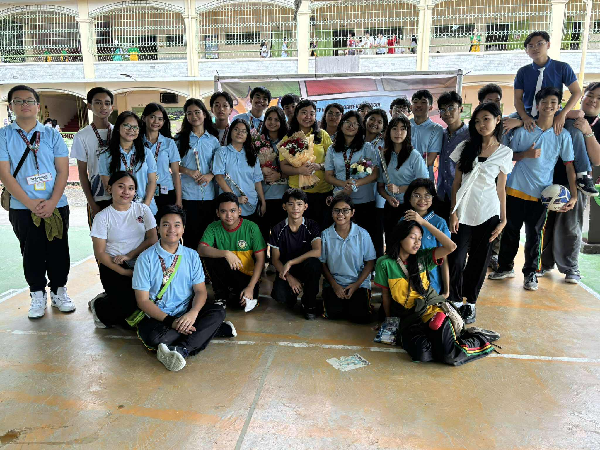
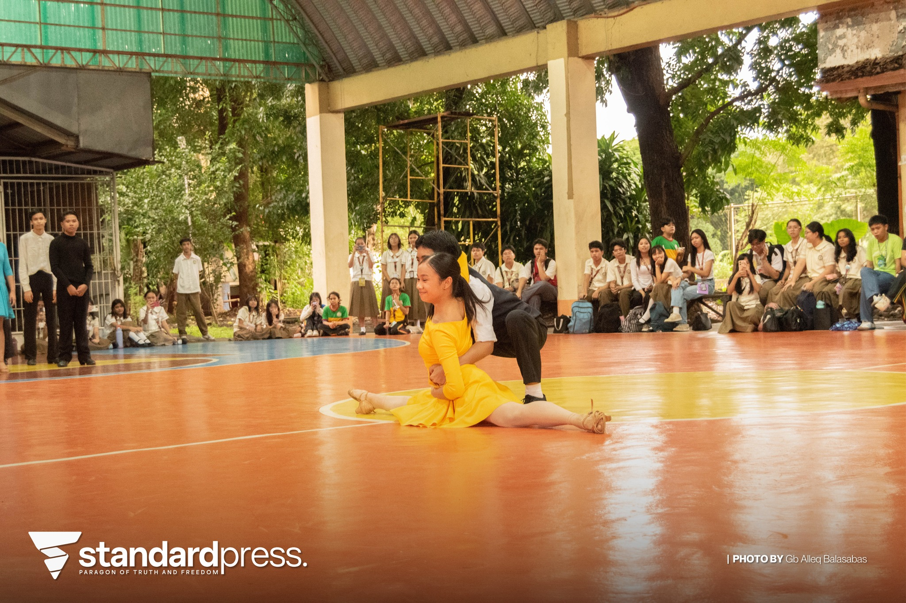
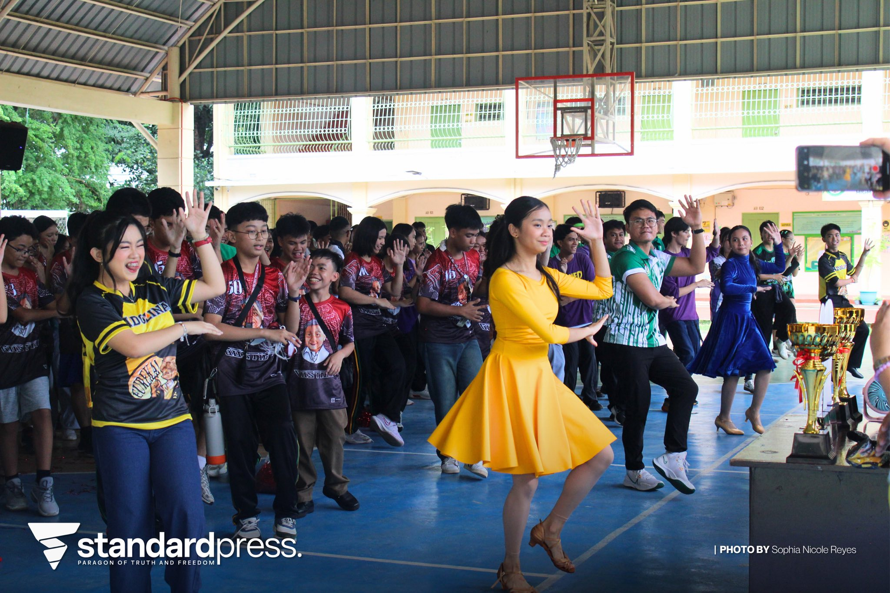

📘 SCIENCE MONTH OPENING

Description: The Science Month Opening celebrated creativity and innovation through different science projects. It encouraged students to explore scientific ideas in fun and creative ways while showing how science connects to real life. The event inspired me to think outside the box and appreciate how science shapes the world around us.
💻 TEACHERS DAY!!

Description: Teachers’ Day was all about showing appreciation to our teachers. The event was filled with performances, surprises, and heartfelt messages that made the day special. It reminded everyone how important teachers are in shaping our knowledge and values. I realized how much effort they put in to help us grow both academically and personally.
💃 DANCESPORT INTRAMURALS 2025

Description: The Dancesport competition was one of the most exciting events of the Intramurals. Participants showed their talent, energy, and teamwork through dance. It was fun to see everyone cheering and supporting their teams. This event showed how sports and art can come together to build confidence and school spirit.
🎯 INTRAMURALS 2025

Description: The Intramurals brought the whole school together through friendly competition. Different teams competed in various sports and activities that built teamwork and sportsmanship. It was a time full of energy, fun, and unity. I learned that winning isn’t everything — what matters most is teamwork and enjoying the experience.
🏆 CLUSTER MEET 2025

Description: The Cluster Meet was a bigger event that gathered schools from different areas to compete and showcase their talents. It was inspiring to see so many skilled and confident participants. The event motivated me to keep improving and to take pride in representing my school.